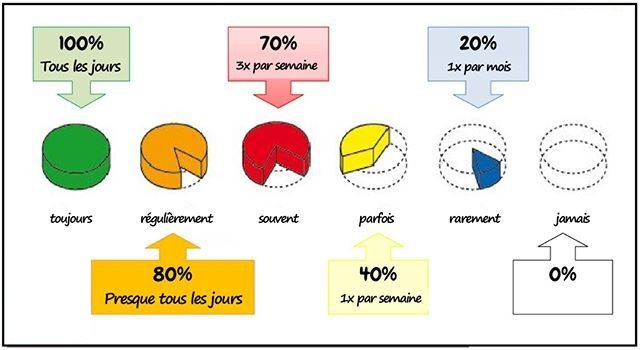
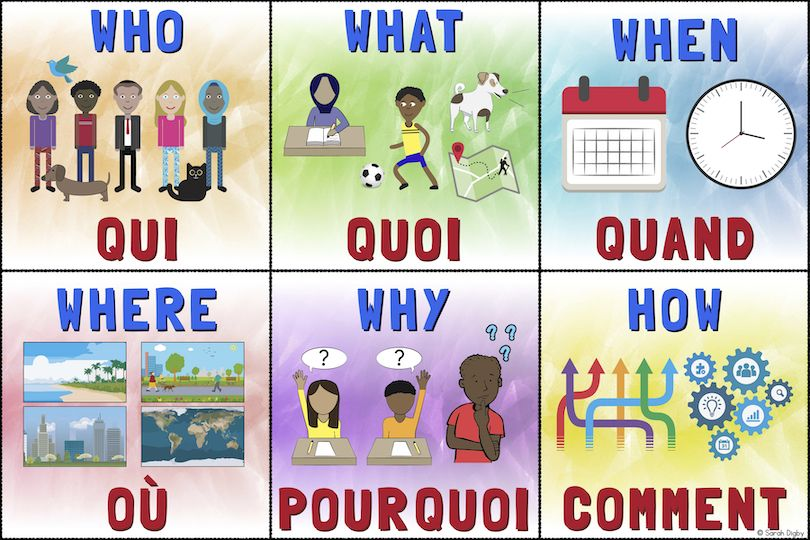

Introduction to Adverbs:
- Adverbs, words that modify verbs, adjectives, or other adverbs, are crucial for enriching the French language.
- In this lesson, we will explore the concept of adverbs, their importance in communication, and how to use them effectively.
Importance of Adverbs
- Adverbs play an essential role in specifying how, when, where, and to what extent an action takes place.
- They add important details to a sentence, providing a more vivid picture of the situation.
- Understanding and using adverbs correctly enhance language clarity and richness.
Identifying Adverbs :
- To identify an adverb, examine the verb, adjective, or another adverb in a sentence. Think about how the action is performed, when it occurs, or the intensity it involves.
- For example, if you have the verb "manger" (to eat), ask yourself when this action is performed. The answer could be "rarement" (rarely), which is an adverb.
Types of Adverbs
- Adverbs of Frequency:
Adverbs of frequency describe how often an action occurs. Here are some common adverbs of frequency in French:
- Toujours (Too-joor) - Always
- Régulièrement (Ray-gew-layr-mahn) - Regularly
- Souvent (Soo-vahn) - Often
- Parfois (Par-fwah) - Sometimes
- Rarement (Rahr-mahn) - Rarely
- Jamais (Ja-may) - Never
Examples:
- Je vais souvent au cinéma. (I often go to the cinema.)
- Il ne mange jamais de viande. (He never eats meat.)

- Interrogative Adverbs :
Interrogative adverbs are used to ask questions. Here are some common interrogative adverbs in French:
- Où (Oo) - Where : Indicates the place or location.
- Quand (Kahn) - When : Refers to time, asking about the timing of an event.
- Comment (Koh-mahn) - How : Inquires about the manner or method of doing
- Pourquoi (Poor-kwah) - Why : Asks for the reason or cause behind an action.
- Combien (Kohm-byen) - How much/many : Used to inquire about quantity or number.
Examples:
- Où est le musée ? (Where is the museum?)
- Quand est-ce que tu reviens ? (When are you coming back?)
